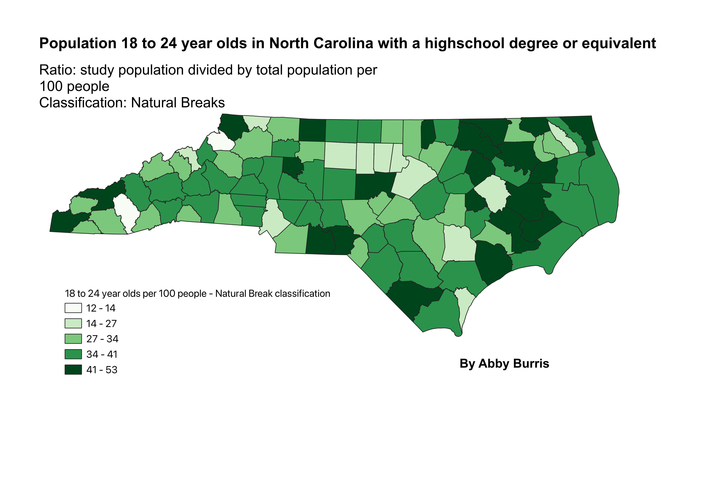
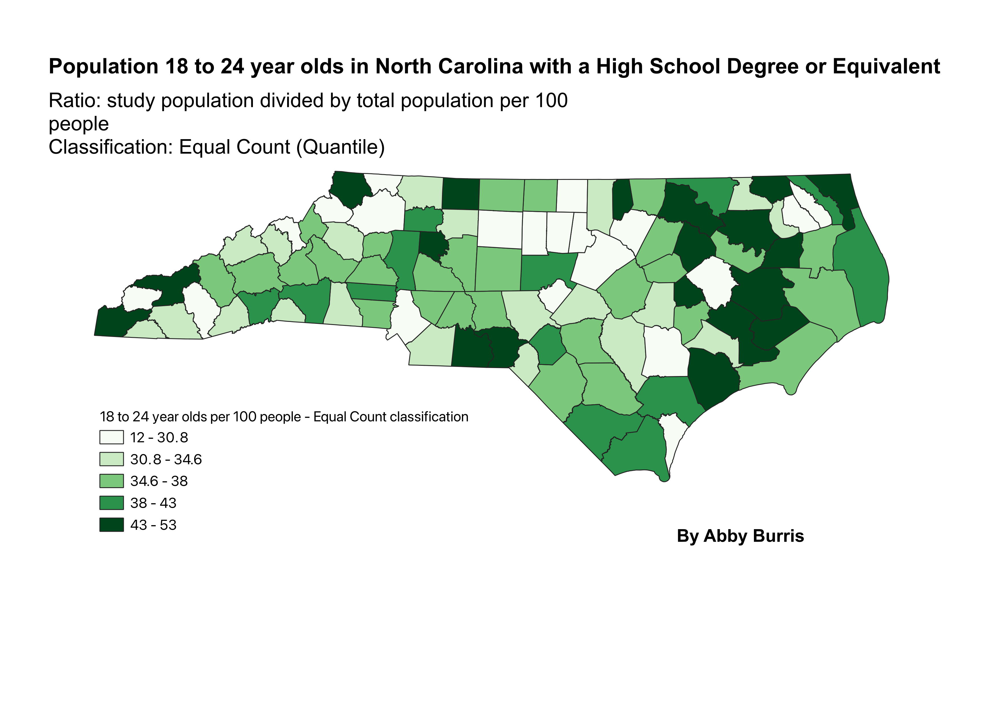
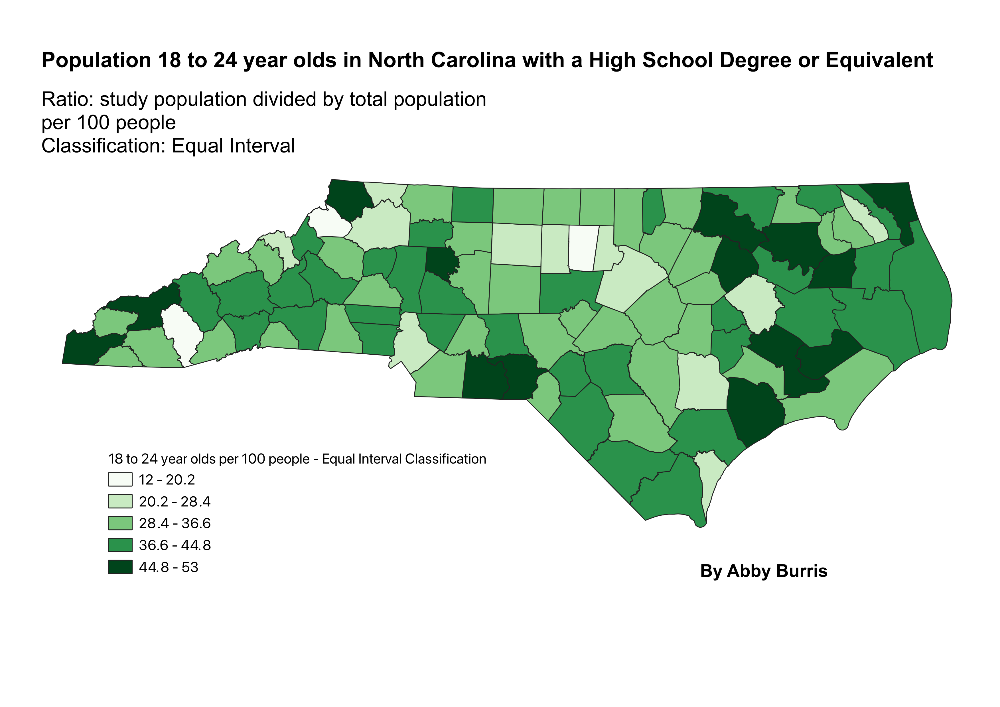

The data describes the population of people in North Carolina by county aged 18 to 24 that have a highschool education or equivalent. The data is from the 2020 census.
The ratio I chose was to divide the study population (18 to 24 year olds with a college degree or equivalent) by the total population of 18 to 24 year olds. This ratio is done for each of the counties. The ratio is then multiplied by 100 to get a whole number value.
This classification finds the inherent boundaries where there are large differences between two values. A benefit of this classification is that you can use if for classifying data that is not evenly distributed. It finds the largest difference between two classes and the smallest difference within each class. One con of using this classification is that the classes can be heavily influenced by outlier values. Its also not very good at illustrating uniformly distributed data.
This classification places an equal number of data points in each interval. One benefit of this classification is that it is easier to find the median in the data becasue there is the same amount of data points above it as below it. It also minimizes the class variability. One negative thing about this classification is that the scale within intervals can be very large because the same number of data points is being put in each interval. This can lead to bad representation of data if there are outliers.
observations
